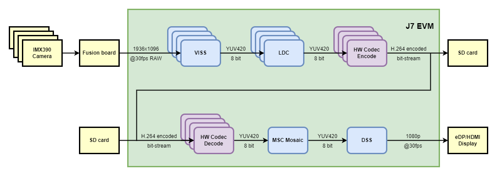

Introduction
This application demonstrates the use of Hardware Codec along with Capture and Display in multichannel mode. This is an extension of the Multi Camera VPAC Application with added codec functionality.
The application supports 3 modes of operation:
- Capture + Encode : en_encode = 1, en_decode = 0
- Captures video from IMX390 cameras
- Encodes the video using Hardware H264 encoder
- Writes the output as a video file
- Decode + Display : en_encode = 0, en_decode = 1
- Reads a H264 encoded Video file
- Decodes the video stream using Hardware H264 decoder
- Displays the output after mosaic
- Capture + Encode + Decode + Display (Default) : en_encode = 1, en_decode = 1
- Captures video from IMX390 cameras
- Encodes the video using Hardware H264 encoder
- Decodes the video stream using Hardware H264 decoder
- Displays the output after mosaic
The application assumes that all cameras are identical. Any number of channels from 1-4 can be selected by the user, subject to constraints of sensor and codec drivers.
Supported plaforms
| Platform | Linux x86_64 | Linux+RTOS mode | QNX+RTOS mode | SoC |
| Support | NO | YES | YES (Capture+Encode Only) | J721E |
| Support | NO | YES | YES (Decode+Display Only) | J721E |
| Support | NO | YES | YES (Capture+Encode Only) | J721S2 |
| Support | NO | YES | YES (Decode+Display Only) | J721S2 |
| Support | NO | YES | YES (Capture+Encode Only) | J784S4 |
| Support | NO | YES | YES (Decode+Display Only) | J784S4 |
Note on expected performance:
Due to limitations of the Codec (Hardware or driver), the demo may not hit 30FPS for 4 channels of 1080p resolution. Following table lists the expected performance of the codec across devices
LINUX
| Mode / SOC | J721E | J721S2 | J784S4 |
| Encode | 2x1080p20 | 4x1080p30 | 4x1080p30 |
| Decode | 4x1080p30 | 4x1080p30 | 4x1080p30 |
QNX
| Mode / SOC | J721E | J721S2 | J784S4 |
| Encode | 2x1080p12 | 4x1080p18 | 4x1080p30 |
| Decode | 2x1080p3 | 4x1080p13 | 4x1080p30 |
Note on CMA size requirements:
The Codec in J721S2/J784S4 requires CMA memory allocation, and due to memory constraints the application may fail for higher number of channels. Following is the table showing out of box support for these devices:
LINUX
| Mode / SOC | J721S2 | J784S4 |
| Encode | 4 channel | 4 channel |
| Decode | 4 channel | 2 channel |
| Enc + dec | 3 channel | 2 channel |
QNX
| Mode / SOC | J721S2 | J784S4 |
| Encode | 4 channel | 4 channel |
| Decode | 4 channel | 4 channel |
Data flow (RAW12 input)

Steps to run the application on J7 EVM (Linux + RTOS mode)
- Build the application and related libraries as mentioned in Build Instructions for Linux+RTOS mode
- Build and install the edgeai components required to run the codec application. This is an additional step required only for the codec application. The steps can be found below:
make edgeai
make linux_fs_install_sd
- Connect four D3-IMX390 RCM sensor boards on cam0, cam1, cam2 and cam3 input ports of the Fusion1 board.
- Use the is_interactive flag to run the demo in an interactive mode which allows the user to print performance characteristics on the UART console.
- Run the app as shown below
cd /opt/vision_apps
source ./vision_apps_init.sh
./run_app_multi_cam_codec.sh
- Depending on the mode of operation, the processed output for each of the captured channels is either displayed through DSS on display or written to a H264 encoded video file (.mp4).
Steps to run the application on J7 EVM (QNX + RTOS mode)
- Build the application and related libraries as mentioned in Build Instructions for QNX+RTOS mode
- Connect four D3-IMX390 RCM sensor boards on cam0, cam1, cam2 and cam3 input ports of the Fusion1 board.
- Use the is_interactive flag to run the demo in an interactive mode which allows the user to print performance characteristics on the UART console.
- Run the app as shown below
cd /ti_fs/vision_apps
./vision_apps_init.sh
./run_app_multi_cam_codec.sh
- Depending on the mode of operation, the processed output for each of the captured channels is either displayed through DSS on display or written to a H264 encoded video file (.264).


 1.8.14
1.8.14